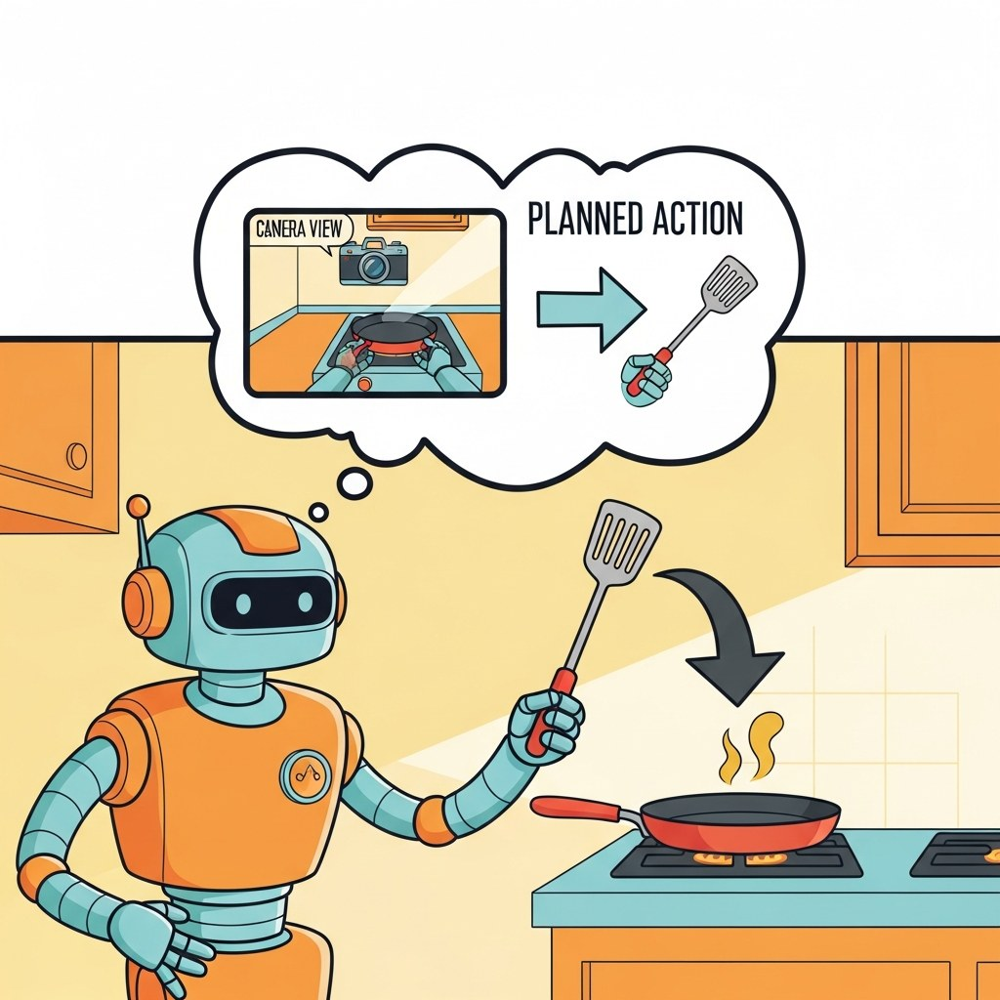

How LLMs act in the physical world. The first half covers Vision-Language-Action models (OpenVLA, Physical Intelligence pi-0, RT-2-X, and the VLA design space, comparisons, and limitations). The second half covers LLM-powered robotics: SayCan-style planning, Code-as-Policies, VoxPoser spatial reasoning, multi-robot dispatch, ROS 2 integration, planner comparison, and the sim-to-real gap.
Chapter Overview
Vision-Language-Action models extend a multimodal LLM's vocabulary with motor tokens, so the same softmax that picks "Paris" given "capital of France" can pick a gripper command given a visual scene. This chapter is the most concrete tour of robotics in the book: OpenVLA-7B as the reference open implementation, Physical Intelligence's pi-0 and pi-0.5 with their flow-matching action heads, RT-2-X and the data-scaling lesson, a side-by-side comparison of VLA models, and the limitations that still bound 2026 deployments. It then layers in the planning side: SayCan, Code-as-Policies, VoxPoser, multi-robot dispatch, ROS 2 integration, and the sim-to-real gap that every working deployment crosses.
VLAs are the most concrete way to see how LLMs become agents in the physical world. The chapter pairs architecture with deployment so that you finish able to read a robotics paper, evaluate a VLA stack, and reason about the planning layer above it.
- Explain the VLA equation: how motor tokens enter a multimodal LLM's vocabulary.
- Walk the OpenVLA-7B reference implementation end to end.
- Compare discrete-token action heads with the flow-matching action experts in pi-0 and pi-0.5.
- Apply the data-scaling lessons from RT-2-X to a new VLA training run.
- Architect a SayCan, Code-as-Policies, or VoxPoser planning stack on top of a VLA.
- Integrate a VLA agent with ROS 2 and diagnose sim-to-real gaps in deployment.
Sections
- 24.1 VLA Architecture in One Equation A Vision-Language-Action (VLA) model is, in one sentence, a multimodal LLM whose vocabulary has been extended with motor tokens so the same softmax that picks "Paris" given "The capital of France... Entry
- 24.2 OpenVLA-7B Reference Implementation OpenVLA-7B (Kim et al., 2024, arXiv:2406.09246) is the first open-weights generalist VLA and is the easiest concrete model to study end to end. Entry
- 24.3 Physical Intelligence pi-0 / pi-0.5 Physical Intelligence's pi-0 (Black et al., 2024) and its 2025 successor pi-0.5 replaced the discrete-token action head of OpenVLA and RT-2 with a flow-matching action expert that emits continuous... Intermediate
- 24.4 RT-2-X & the Data-Scaling Story RT-2-X (Open X-Embodiment Collaboration, 2024) is the result you get when you take the RT-2 architecture and train it on the union of 21 institutions' robot data. Advanced
- 24.5 Comparing VLA Models This section consolidates the previous four into one side-by-side comparison. Intermediate
- 24.6 VLA Limitations 2026 VLAs work, but they work in a narrower range than the marketing implies. Intermediate
- 24.7 SayCan: Grounding LLM Plans SayCan (Ahn et al., 2022, arXiv:2204.01691) was the first credible answer to "how do you get an LLM to plan for a real robot?" Its insight was to combine two probabilities that, separately, each fail. Intermediate
- 24.8 Code-as-Policies Code-as-Policies (Liang et al., 2023, arXiv:2209.07753) generalized SayCan by replacing "rank a skill from a fixed list" with "write Python code that uses skills as function calls". Intermediate
- 24.9 VoxPoser: Language as Spatial Cost Field VoxPoser (Huang et al., 2023, arXiv:2307.05973) took a different path from SayCan and Code-as-Policies. Intermediate
- 24.10 Multi-Robot Dispatch via Shared LLM The single-robot, single-LLM-planner stack from Sections 40.1-40.3 scales surprisingly poorly to multiple robots. Intermediate
- 24.11 ROS 2 Integration Every concept in the previous four sections hits the road through ROS 2 (Robot Operating System 2), the de facto middleware for serious robotics in 2026. Intermediate
- 24.12 Comparing the Planners Sections 40.1-40.5 covered four planning paradigms: SayCan's skill-ranking product, Code-as-Policies' executable-program approach, VoxPoser's spatial-cost-field optimization, and the RT-X-style... Advanced
- 24.13 Sim-to-Real Gap Every working robotics deployment crosses the sim-to-real gap one way or another. Advanced
What's Next?
This chapter begins with Section 24.1: VLA Architecture in One Equation. Each section builds on the previous one, so we recommend reading them in order.